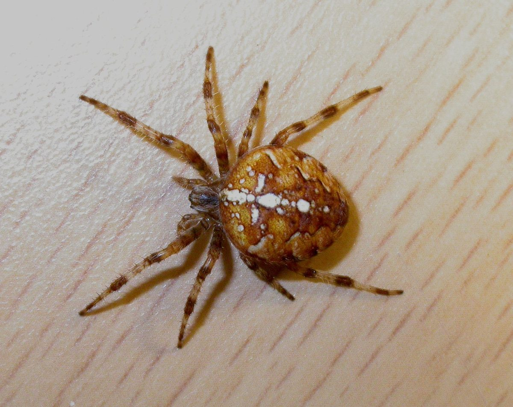

Our work
Bringing change
-

Community development
Our goal is to promote opportunities to engage with and experience the natural setting. The area is designated as a Site of Special Scientific Interest due to the underlying quartzite gravels from an ancient river-bed. Learn more about our work by getting in touch today.
-

Education and outreach
We provide a range of educational and outreach activities related to conservation, ecology and the wildlife sanctuary. Contact us to learn more about our commitment to this cause.